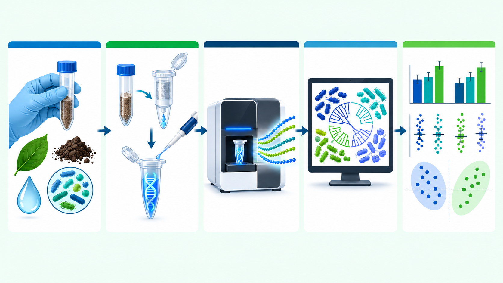
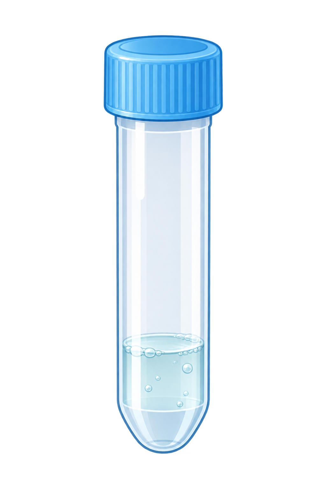
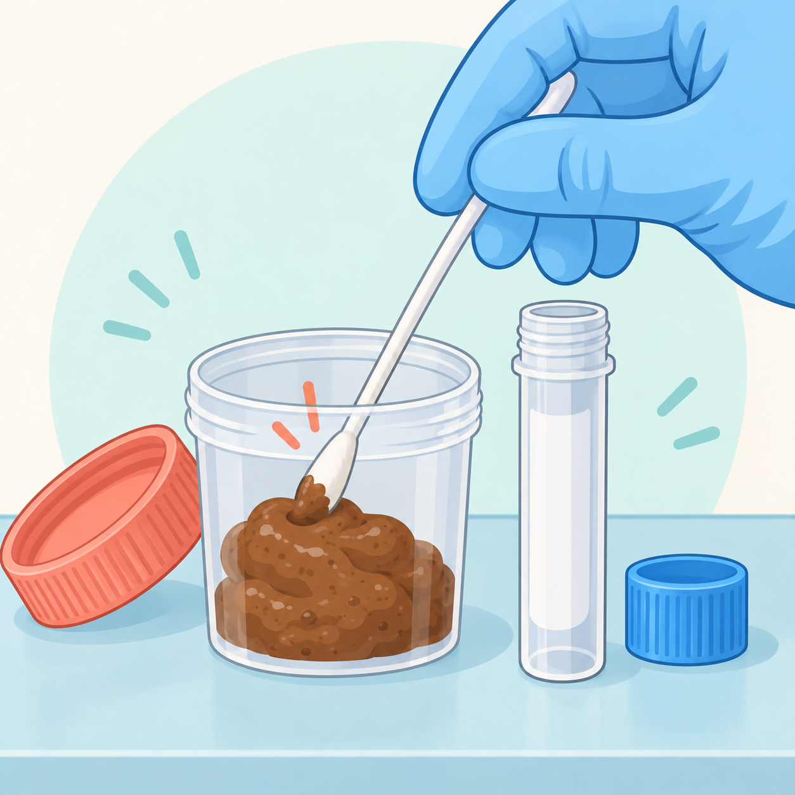
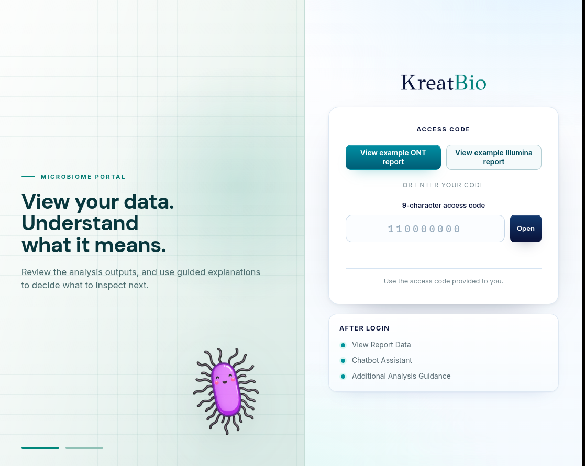
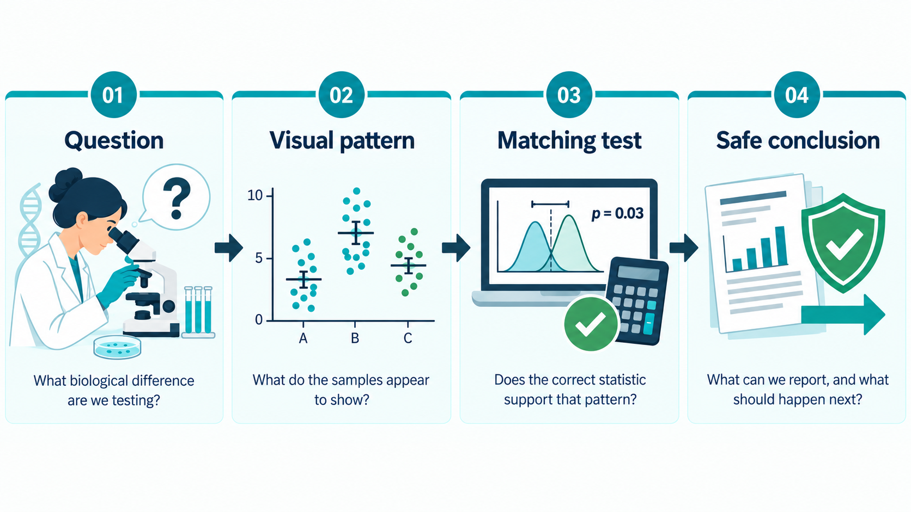

Examine bacterial composition, diversity and predicted functions.
KodaSeq-i walkthrough
Evidence-led case study
Microbiome report walkthrough via KodaSeq-i
Compare paired saliva and fecal bacterial communities, then decide what the evidence can—and cannot—tell us.
60-minute guided walkthrough
01About KodaSeq-i
What is KodaSeq-i?
A guided portal for understanding microbiome data
KodaSeq-i brings microbiome results, statistical evidence and guided explanations together in one interactive report.
Compare groups, evaluate statistical support and check whether outliers change the conclusion.
Turn charts and statistics into defensible conclusions, limitations and next steps.
Currently supported
- Illumina 16S amplicon data
- Oxford Nanopore full-length 16S data
- Illumina ITS1 fungal data
Context
DNA sequencing
From biological samples to microbiome evidence

03Project design
Illustrative FYP case study
Comparing saliva and fecal microbiomes
5participants
Each person contributes two matched samples.

Salivan = 5
Fecesn = 5HypothesisThe microbial communities vary between the two sites.
Questions
01How different are they?02Which bacteria distinguish them?03What functions are predicted?
1Collect saliva and feces
2Extract bacterial DNA
3Sequence 16S V3–V4 with Illumina
4Build profiles and statistics
+
06
Reading the report
Inside KodaSeq-i
Once inside: how to interpret the report

07Composition
Composition
Which bacteria distinguish the two body sites?
Faecalibacterium
42FDR-supported species-level differences
Porphyromonas
Body-site association—not a health effect. The taxa distinguish sampling environments; they do not show how either community changes the body.
08From pattern to evidence
The next question
A visible pattern is the starting point—not the proof
Bar charts show which species or genera stand out in saliva or feces.
→Next, statistics test whether the two microbial communities are genuinely different.
Alpha diversity
Within-sample diversity
Is one body site more diverse?
Saliva 126Feces 84
p = 0.009
Saliva 4.03Feces 3.55
p = 0.076
Saliva contains more detected features, but the broader richness-and-evenness difference remains uncertain.
10Beta diversity
Between-sample diversity page
Main hypothesis test: Do saliva and feces form distinct communities?
Yes.
Body site explains a substantial share of the Bray–Curtis community difference.
PERMANOVA p0.010R²38.4%PERMDISP p0.086
The separation is statistically supported without a conventional dispersion warning.
11Sensitivity
Hypothesis test
If a participant is an outlier, does the conclusion change after removing their samples?
12Functional prediction
Predicted functional potential
Do the communities carry different predicted functions?
1,061
13FDR-supported predicted feature differences
8 pathways636 KO terms417 EC terms
These are genome-based predictions from 16S profiles—not measured activity or demonstrated effects on the body.
Decision support
Decision
What can we conclude?
The sites differ.
But this study does not show how those differences affect the body. It identifies site-associated communities and predicted functions for follow-up.